Free Interactive Tools
Free tools, simulators and visual calculators that run in your browser. No signup, nothing to install.
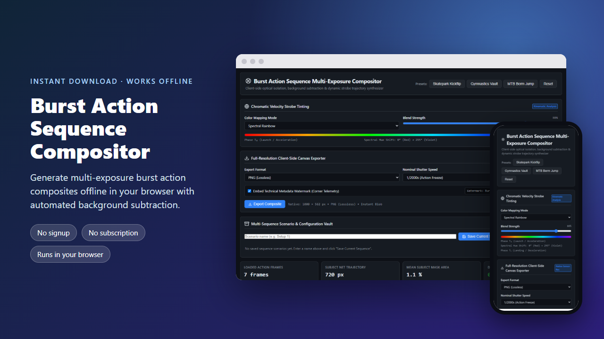
Combine Burst Photos into One Action SequenceGenerate multi-exposure burst action composites offline in your browser with automated background subtraction.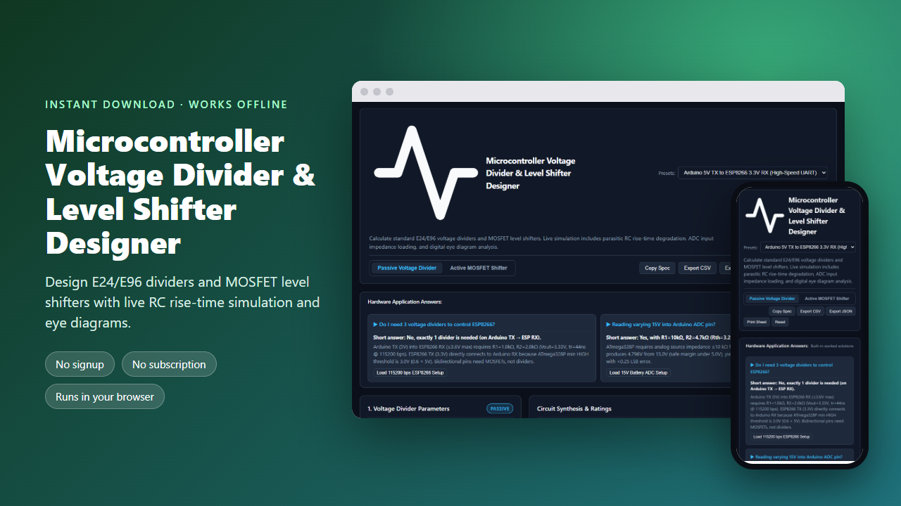
5V to 3.3V Voltage Divider & Level Shifter CalculatorDesign E24/E96 dividers and MOSFET level shifters with live RC rise-time simulation and eye diagrams.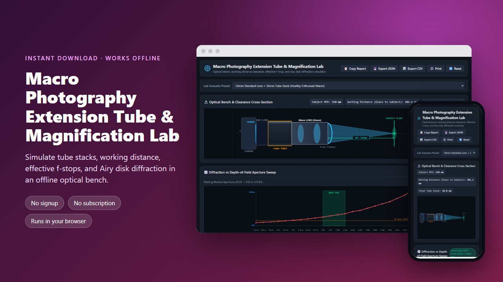
Calculate Extension Tube Macro Magnification & OpticsSimulate tube stacks, working distance, effective f-stops, and Airy disk diffraction in an offline optical bench.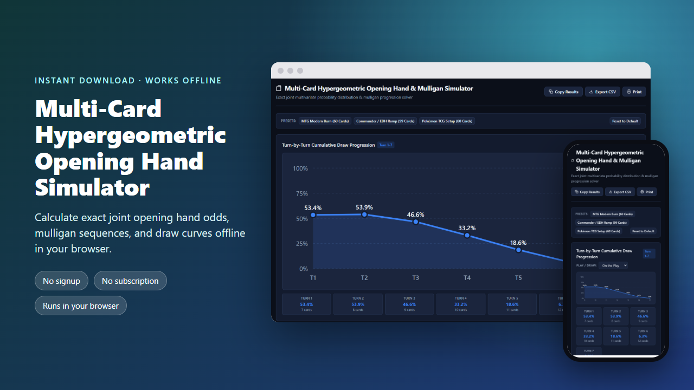
Multi-Card Hypergeometric Opening Hand CalculatorCalculate exact joint opening hand odds, mulligan sequences, and draw curves offline in your browser.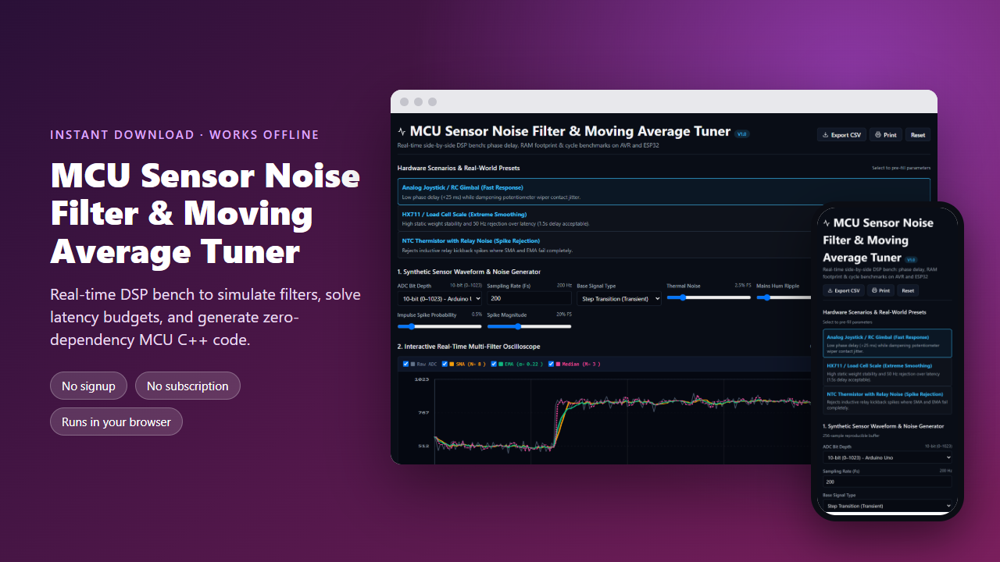
Arduino Sensor Noise Filter & Moving Average TunerReal-time DSP bench to simulate filters, solve latency budgets, and generate zero-dependency MCU C++ code.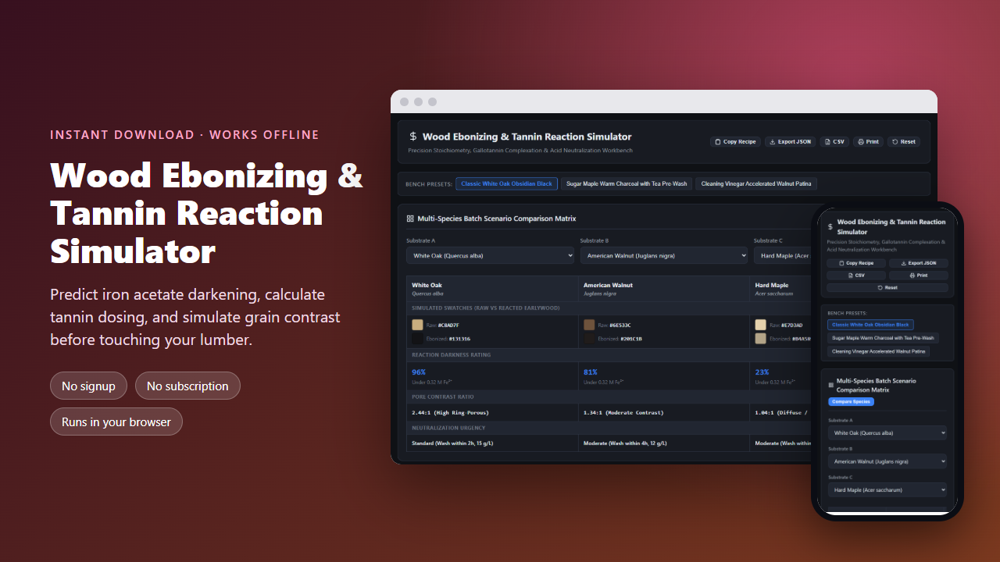
Iron Acetate Wood Ebonizing & Tannin CalculatorPredict iron acetate darkening, calculate tannin dosing, and simulate grain contrast before touching your lumber.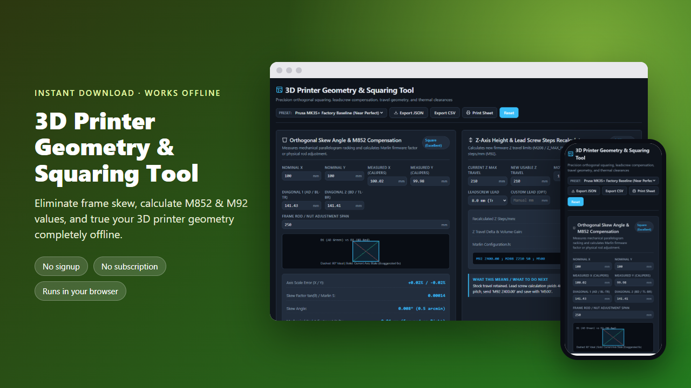
3D Printer X and Y Axis Not Square Fix & Geometry ToolEliminate frame skew, calculate M852 & M92 values, and true your 3D printer geometry completely offline.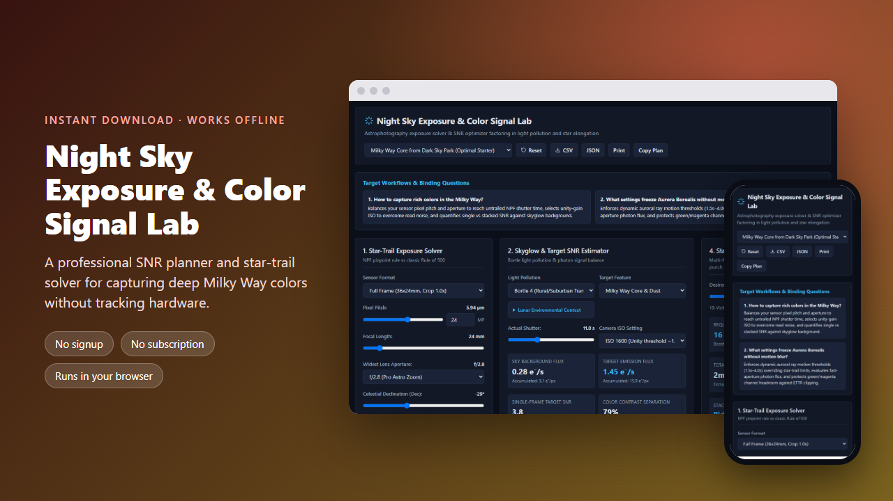
Milky Way Color Exposure & NPF Star Trail PlannerA professional SNR planner and star-trail solver for capturing deep Milky Way colors without tracking hardware.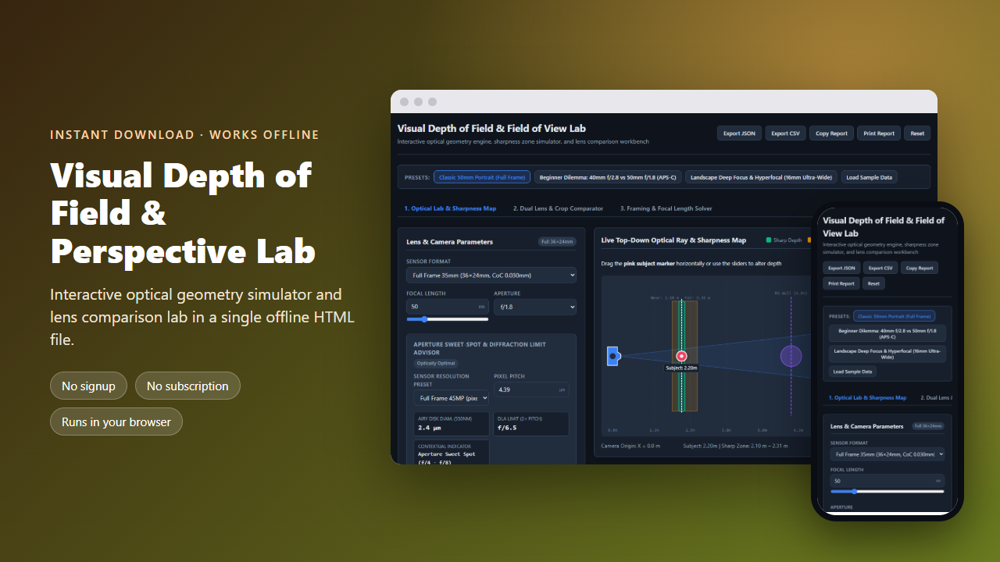
Depth of Field Visualizer & Optical Geometry SimulatorInteractive optical geometry simulator and lens comparison lab in a single offline HTML file.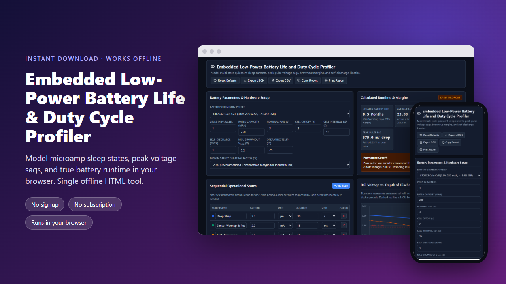
Embedded Low-Power Battery Life & Duty Cycle ProfilerModel microamp sleep states, peak voltage sags, and true battery runtime in your browser. Single offline HTML tool.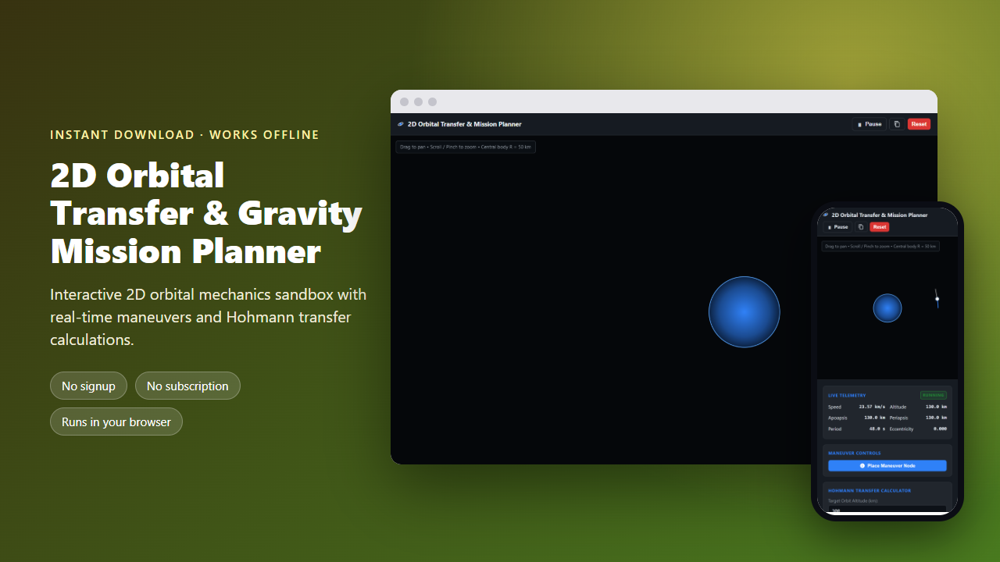
2D Orbital Transfer & Gravity Mission PlannerInteractive 2D orbital mechanics sandbox with real-time maneuvers and Hohmann transfer calculations.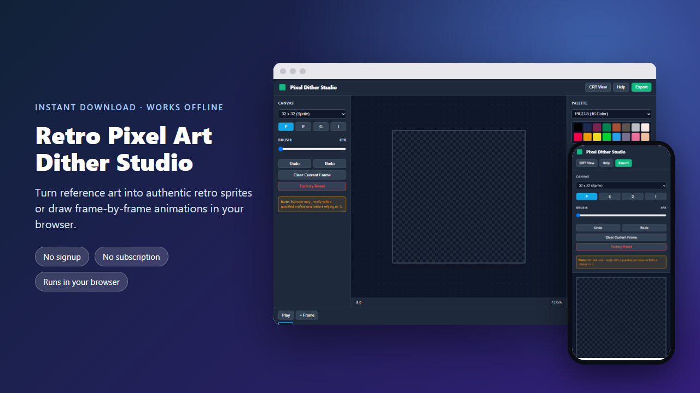
Retro Pixel Art Dither Studio - Free Online Sprite ToolTurn reference art into authentic retro sprites or draw frame-by-frame animations in your browser.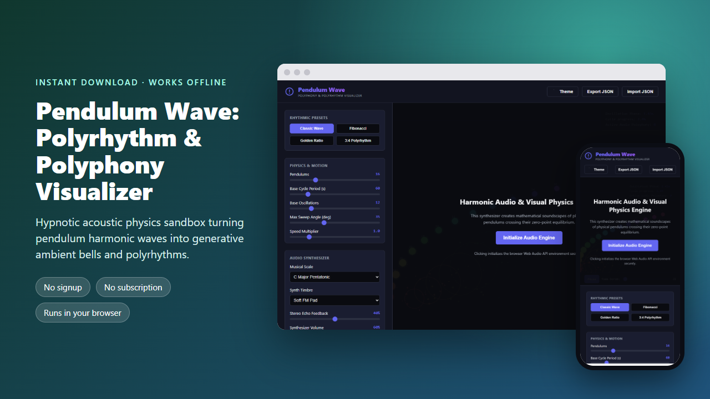
Pendulum Wave: Polyrhythm & Polyphony VisualizerHypnotic acoustic physics sandbox turning pendulum harmonic waves into generative ambient bells and polyrhythms.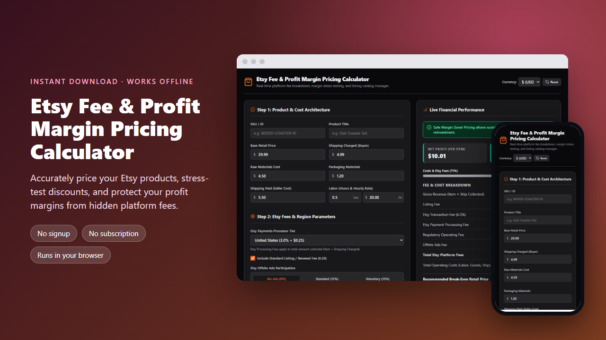
Etsy Fee & Profit Margin Pricing CalculatorAccurately price your Etsy products, stress-test discounts, and protect your profit margins from hidden platform fees.© 2026 Free Interactive Tools. All rights reserved. Privacy